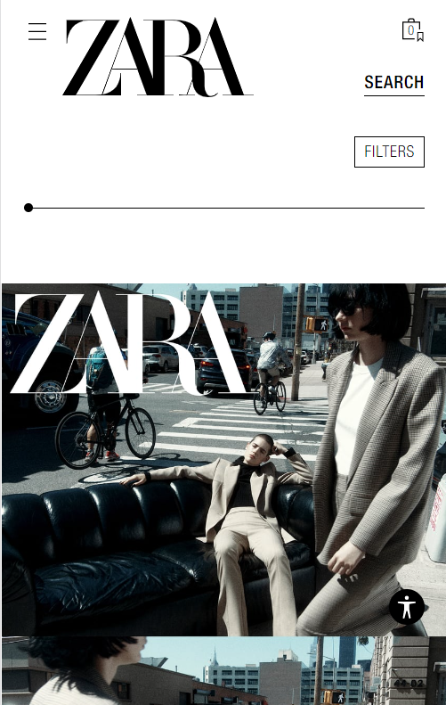

White Space and Clean Design
Apple
https://www.apple.com/
Apple's website is pretty simple but attractive. They did not use too much decorations to make the site look good. They uses white space and simple design and powerful words to make their products stand out.
PARC: Contrast
H&M
https://www2.hm.com/en_us/index.html
The H&M website is the most iconic example of contrast because the background is white and they use red to let their text or box to stand out. one thing that I like is they still look simple and consistent.
PARC: Alignment
ZARA
https://www.zara.com/us/en/woman-new-in-l1180.html?v1=2111785 The logo of Zara is an example of alignment. If you take a look of the other pages, you can tell every picture and text layout in the same level, which makes the site simple and fashion.